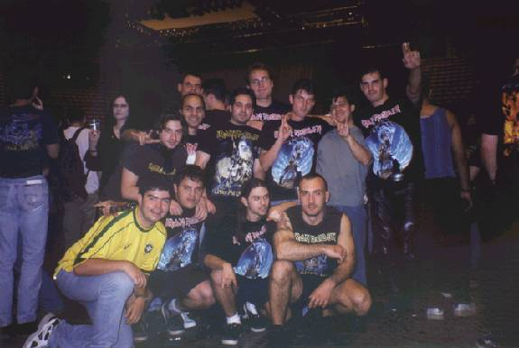

BIENVENIDOS A LA CASA MEGADETH
¿Hola Exequiel como estas?
Elegi este titulo pues asi comenzo
la quimica entre Megadeth y el publico
argentino, alla por 1995 (tengo el
pirata). 
Bueno por donde empezar...
llegamos con los fans el miercoles,
hacia mucho calor. Al dia siguiente,
jueves era el día soñado, el dia de
la vuelta, el dia de la bestia!
no te imaginas lo nerviosos, exitados,
etc que estabamos todos.
El jueves fuimos a la mañana a Notre Dame,
luego a la Saint Chapelle, y alrededor de
las 16:00 hs, como el hotel estaba cerca del
estadio, decidimos ir a ver que onda.
El recital empezaba a las 19:30 hs , segun
entradas y prensa.
Por suerte el palais de berci es un estadio,
re bien ubicado, tiene una estacion de subte,
toda moderna que raja la tierra. Cuando faltaban
algunas estaciones empezaron a subir fans, como
nosotros, lo que nos puso muy contentos.
Al llegar se nos acerca un ingles, y nos pregunta
donde quedaba el estadio, lo acompañamos a la
salida (hay 40.000 puertas diferentes) y despues
desaparecio, antes nos dijo, al igual que todos
los europeos y no europeos que conocimos, que no
podian creer que hayamos viajado tan lejos para ver
a maiden!
cuando subimos no lo podiamos creer! el estadio ya
estaba hasta las manos!, habia miles de fans por
todos lados! todos gritando y muy felices. Tambien
estaban los revendedores, y policias de civil, todo
muy bien controlado. Con los chicos nos miramos y
decidimos volver al hotel, dejar camaras y regresar
al estadio.
Media hora despues estabamos ahi, entre miles de maideanos, cuando de
pronto pasa un chico con la camiseta de la seleccion
me acerque y le pregunte si era argentino, me dijo
que si y nos abrazamos y nos pusimos a hablar de todo
un poco. El sabia de mi aviso en la Madhouse pues se
la envian desde argentina (vive en paris) y no podia
creer que era yo el creador.
Despues desaparecio.
Llame a los chicos y les dije que empezaramos a hacer
la cola. Muy organizado todo, no tardamos mucho en
entrar, y cosas del destino, al lado mio se pone un
chavon con la camiseta de brasil, le pregunto
"¿voce fala portugues?" y me dijo que si, que era brasuca.
le presente a los chicos y nos pusimos a hablar.
nos hicimos amigos y se vino con nosotros, pasamos
el control y.... estabamos adentro!!!!!.
El estadio esta re bueno, desde cualquier angulo tenes
buena vision, habia un stand gigante donde vendian
merchandising, re caro!!!!!
Nos regalaron la revista oficial del estadio y un casete con demos, entre otras,
de luca turelli, el
mismo disco que 3 meses despues llegara aca.
Tomamos posicion en el campo cuando el brasuca nos
da una gran alegria...
Habia entrado con una camara!!!! si nos sacamos dos
fotos todos juntos, una de ellas es la que ves, la
otra no me la mando, me dio su direccion de e-mail
y prometio enviarla, por suerte cumplio. La duda que
tenemos es por que no nos manda el resto de las fotos.
Bueno crease o no los franchutes no son tan amargos
como creiamos, gritaban, bailaban, etc, esperando por
Megadeth. Ahi me hice amigo de unos italianos,
que aprovecharon para recordar al Diego y que el
publico argentino metalero es el mejor. (Despues se
fueron a fumar un caño del tamaño de un choclo),
a las 19:30 en punto se apagan las luces y entra
Megadeth, como yo estaba en un estado de boludismo
total, no recuerdo el orden de los temas, pero te
cuento algunos, igual te aclaro, fue la vez que
Megadeth sono mas groso en vivo (para mi y los
chicos coinciden conmigo):
- Hangar 18: como siempre este clasico la rompe,
no hubo ningun pifie, tenia a Marty a 1 metro de
distancia
- Tornado Of Souls: que te puedo decir, joya!
- She Wolf: uno de los temas mas grosos de su ultima
etapa, me encanta, sono poderoso, me quede boludo!
- Symphony Of Destruction (mencion especial), sono
como siempre, prolija, sincronizada, y los fans
argentinos que podiamos hacer, siiii, empezamos a
cantar: Megadeth, Megadeth, Aguante megadeth!
(los europeos miraban, algunos intentaron acompañar)
- Sweeting Bullets: ok
- Disco Risk: Yo no conocia ningun tema, tocaron
Crush'Em, Prince Of Darkness y el otro conocido...
hubo uno que no me gusto, me recordo a los matracas
de Metallica, los otros dos muy bien...
- Anarchy In USA: clasico, groso, la rompio tambien.
- A Tout Le Monde: momento soft, muy bueno.
- Secret Place: muy buenoooooooooo!
- In My Darkest Hour: que tema, que bien sono,
la cante toda!
- Skin On My Teeth: Muy buena!
Te repito, sonaron muy bien, superaron mis expectativas,
vi a Marty con el pelo corto (me llamo la
atencion), Dave con su melena, no se le veia la
cara cuando "trasheaba", Dave, nos hacia gestos,
quizas se dio cuenta que eramos un grupo de locos,
y el batero, bien, creo que adelgazo unos kilos,
porque hacia mucho calor y toco a full.
Y 5 minutos despues apareceria Bruce, con su Maiden,
y no digo Steve, pues pude corroborar que maiden es
de Bruce, el es su alma, el que es capaz de mover
a Argentinos locos, desde el otro lado del mundo,
solo para verlo a el y su regreso, capaz de levantar
una banda tan grosa como Maiden, y devolverle su
lugar en la historia del metal, pero ese es otro
capitulo (muy largo)...